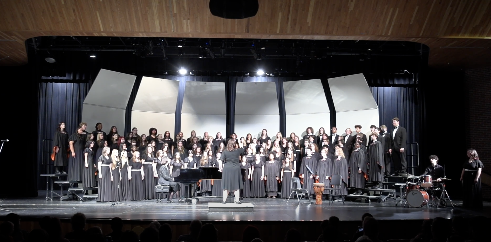

Shawnee Mission Northwest Choir Program
About the Program
The Shawnee Mission Northwest Choir department and Fine Arts programs are the pride and joy of the Northwest Cougars. Multiple times a year, the Ensembles perform choral and modern works for audiences from local area parents to crowds at concert halls. Directed by Mrs. Cassie Banion and accompanied by Mrs. Nancy Hulett, the choirs are lead with excellence in mind, and you can often find their performers competing in State Choral Competitions and performing in High Level Honor Choirs. Often performing in the Greg Parker Auditorium, the ensembles each sing multiple songs with many origins, from foreign language pieces to traditional and folk songs, each unique in their performance.
Combined Ensembles performing 'Music Lead The Way' arr. Farnell
Upcoming Performances
- Winter Concert - December 9th, 2024 at 7:00 PM
- Tri-M Induction Ceremony - December 12th, 2024 at 7:00 PM
- A Cappella Crown Center Tour - December 20th, 2024 at 6:30 PM
- Carnegie Hall Premier Trip - March TBD
- Pre-Festival Concert - April 7th, 2025 at 7:00 PM
- Final Forte - May 16th & 17th, 2025 at 7:00 PM